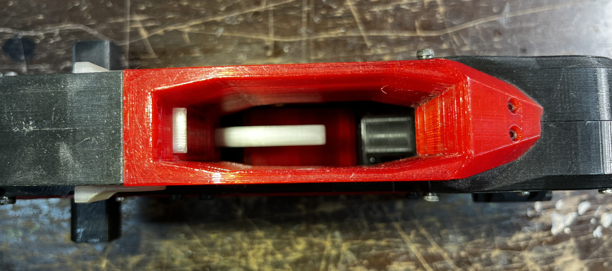
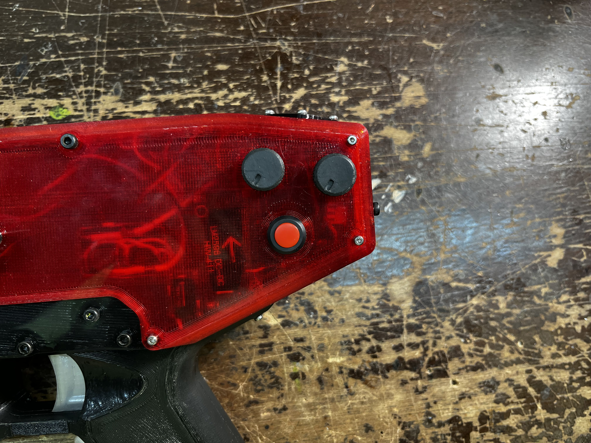
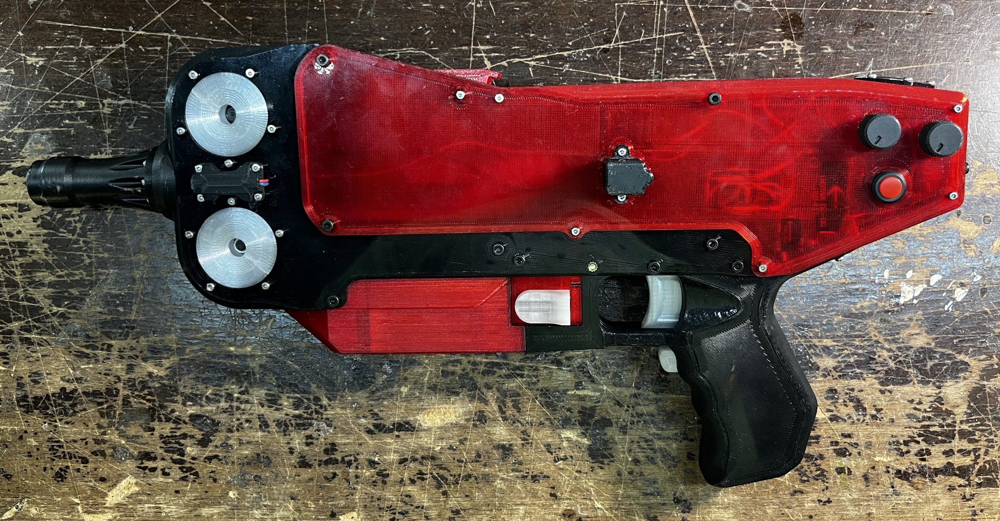
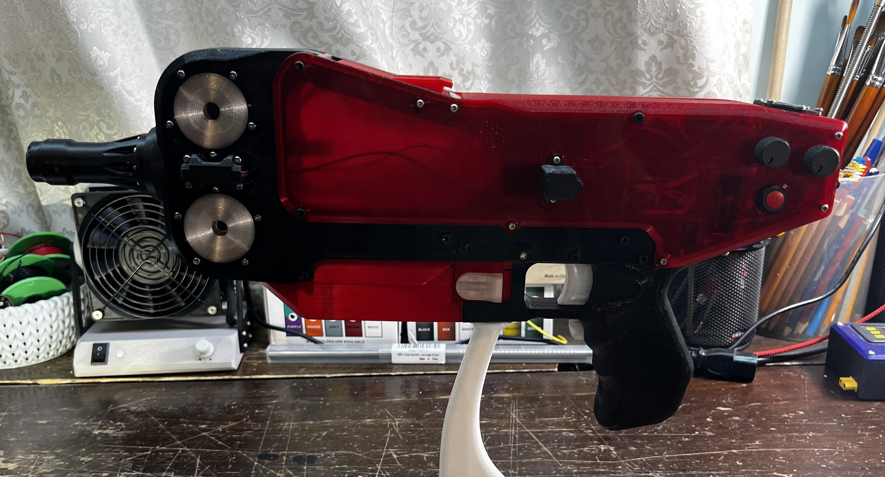
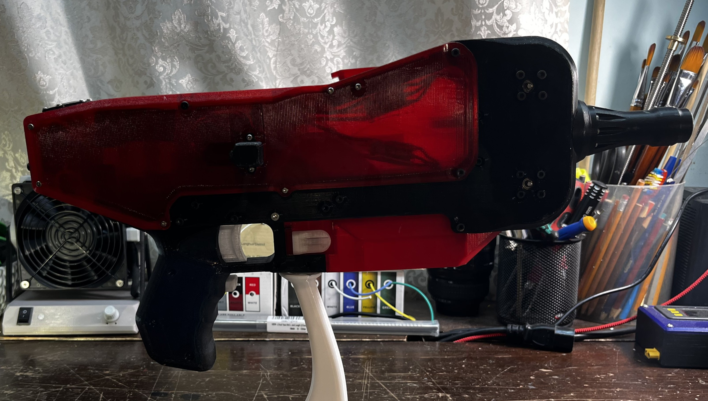
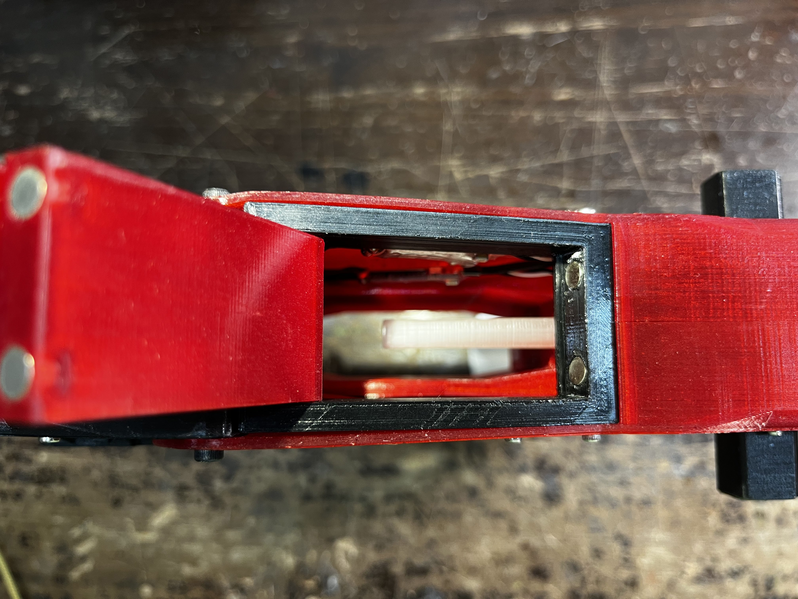
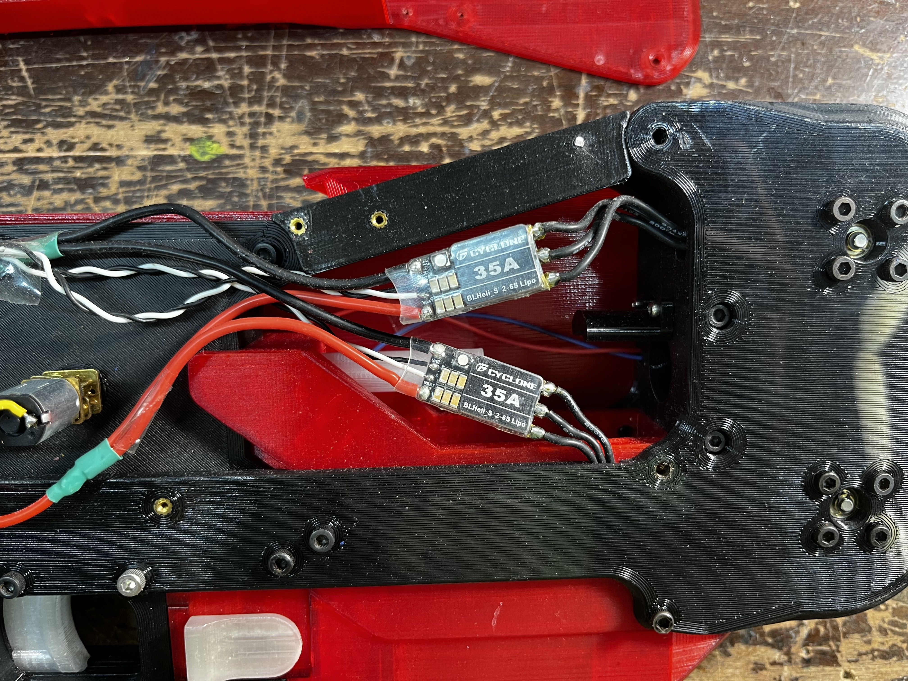
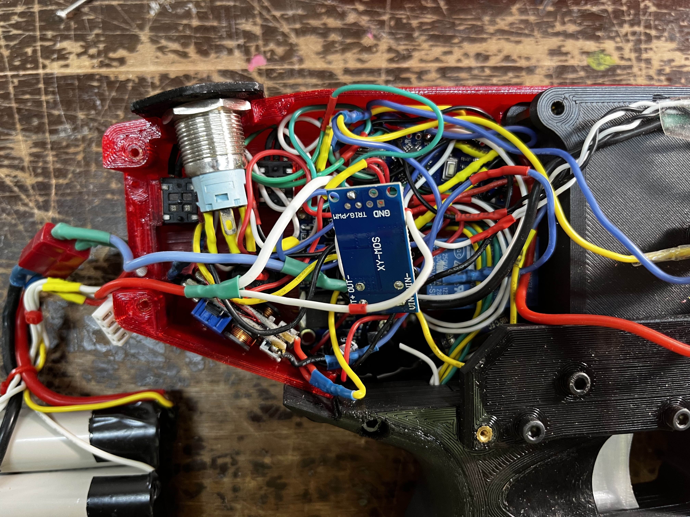
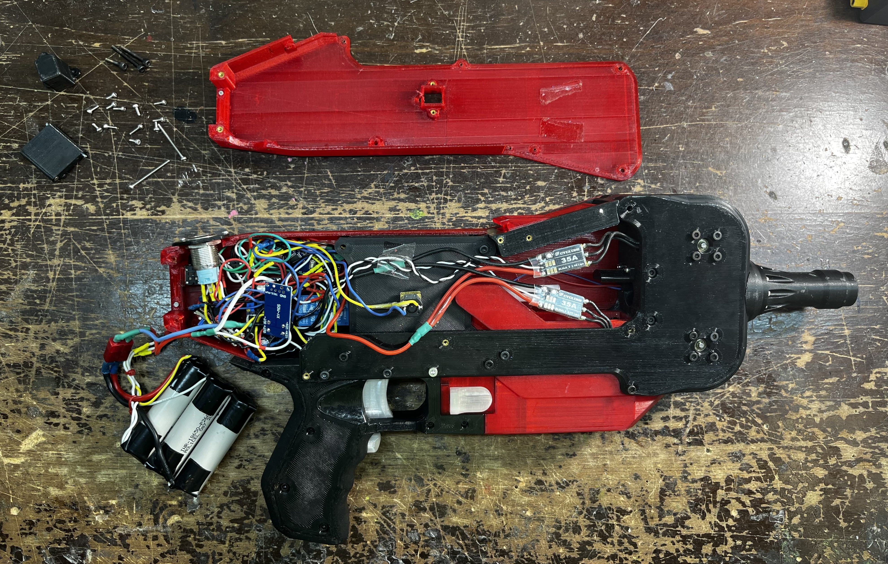

The underwhelming performance and high cost of modern dart blasters motivated me to develop my own Nerf dart machine. It feature significantly larger 3D printed flywheels for higher angular momentum, edge velocity, and dart contact area, spun by brushless drone motors. Darts are pushed into the flywheel chamber using a Scotch yoke mechanism, and the behavior of the entire unit is moderated by a custom program running on an Arduino Nano.
Clip receptacle and release mechanism in action
Firing: chamber view
Firing: wielder POV

Open view of the blaster CAD. Visible from left to right are the barrel, flywheels, dart inlet guide, scotch yoke pusher, batteries, control knobs, and a dual trigger geometry built into the handle.

Full CAD model. Every individual component is designed to 3D print without supports

Chamber view from bottom

Left knob adjusts fire rate, the right knob controls flywheel RPM, and the red button switches an aiming laser.

The construction is very solid with multiple overlaps and redundant screws.

The transparent PETG side plates reveal some of the electronics.

The main power switch, despite its size, is rated for only 5A, while each motor can consume significantly more. For this reason, The power switch only activates a pair of 10A relays which handle the brunt of the system power.

Top down view of the chamber. A trapdoor style access port is held in place by magnets.

Visible are the two brushless motor speed controllers along with their power and signal wires, and a small DC motor on the left which runs the pushing mechanism.

The nest of wires and modules in the rear compartment animates the blaster. Included are the Arduino Nano, a 5V regulator for, a voltage booster for the pushing motors as well as MOSFET motor driver for PWM control, the aforementioned power relays, on/off switch, and adjustment potentiometers.

The blaster is powered by three 18650 li-ion batteries in series. Each is capable of 30A, and with a nominal voltage of 3.7V, the battery pack can deliver (3.7 * 3) * 30 = 333 watts of power. When the main power switch is pressed, it immediately connects the battery to the onboard 5V regulator, which in turn powers up the arduino, switches the relays, and powers the laser should it be on. The relays are then able to safely and reliably conduct the full power of the battery to both the flywheel and dart pushing motors.